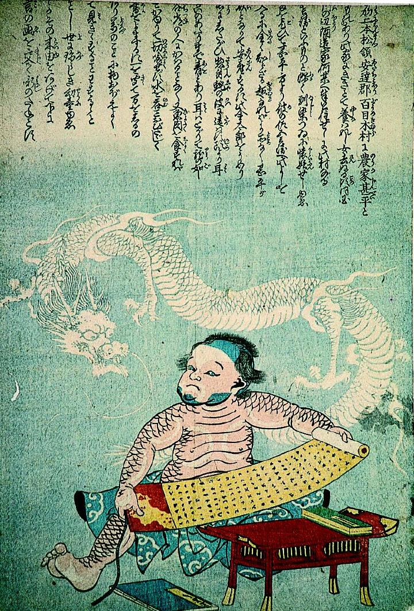

奇妙な子供と、後ろに描かれた龍。子供の全身は蛇のような鱗で覆われており、頭から顎までが青く、耳が尖っている。子供ながらに文机にむかって巻物を開いている。
出典：親書誌：A5_pushkin_0023：（龍の間の子；リュウノアイノコ）／日付：2011／資源識別子：A5_pushkin_0023_0001_0000
Copyright (c)2010- International Research Center for Japanese Studies, Kyoto, Japan. All rights reserved.